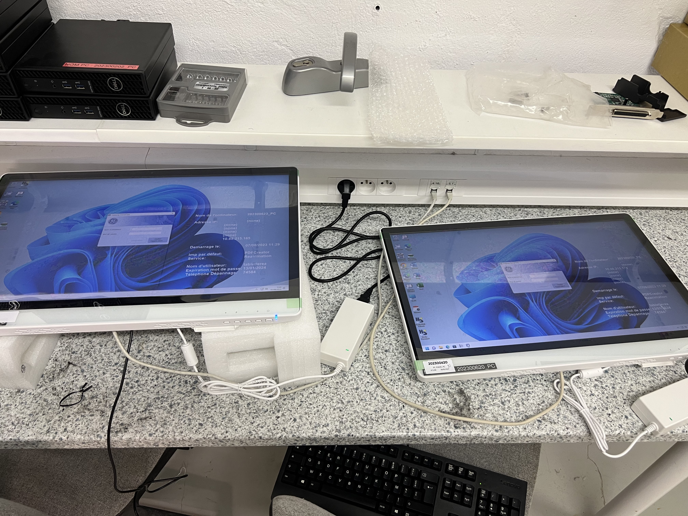
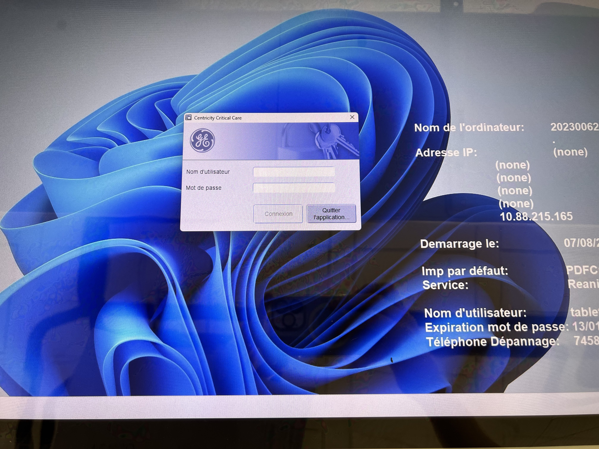
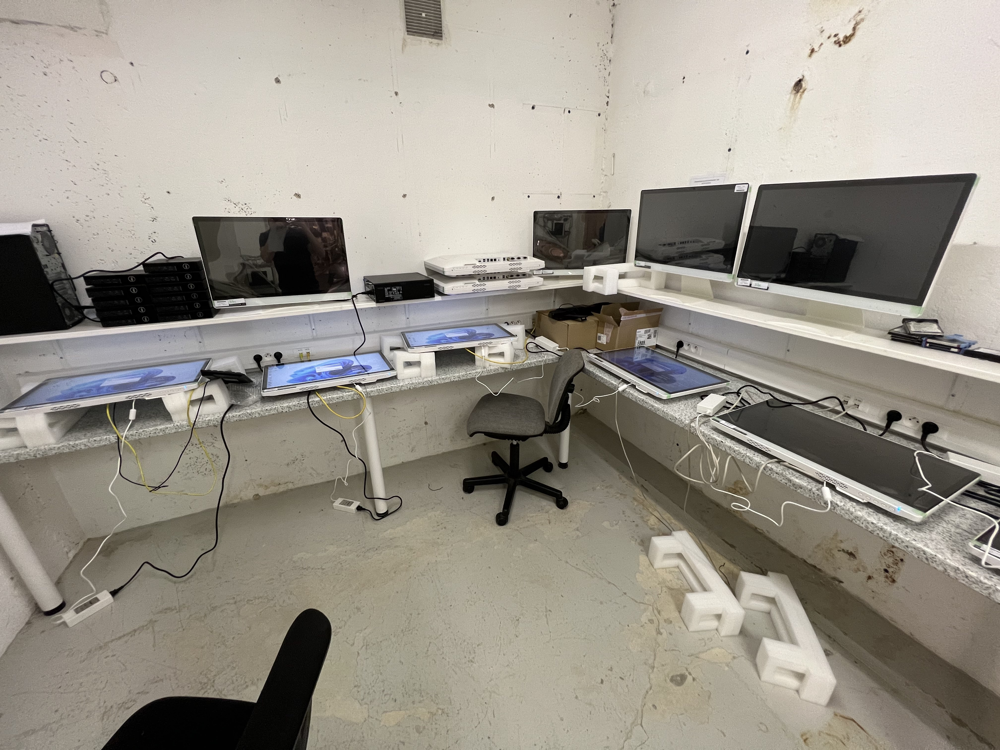
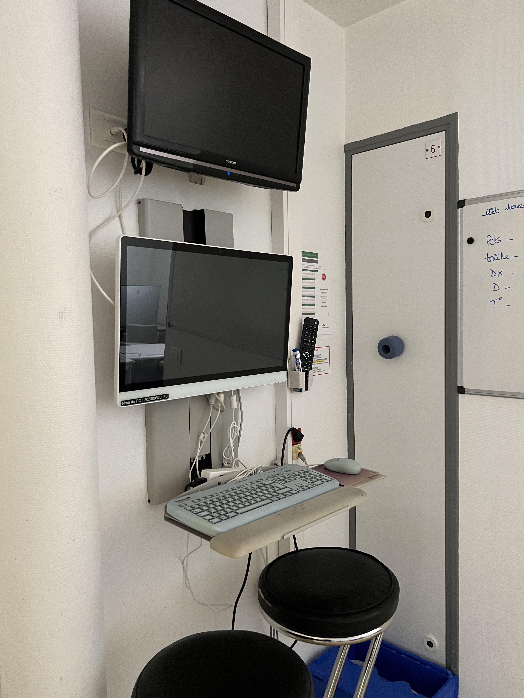
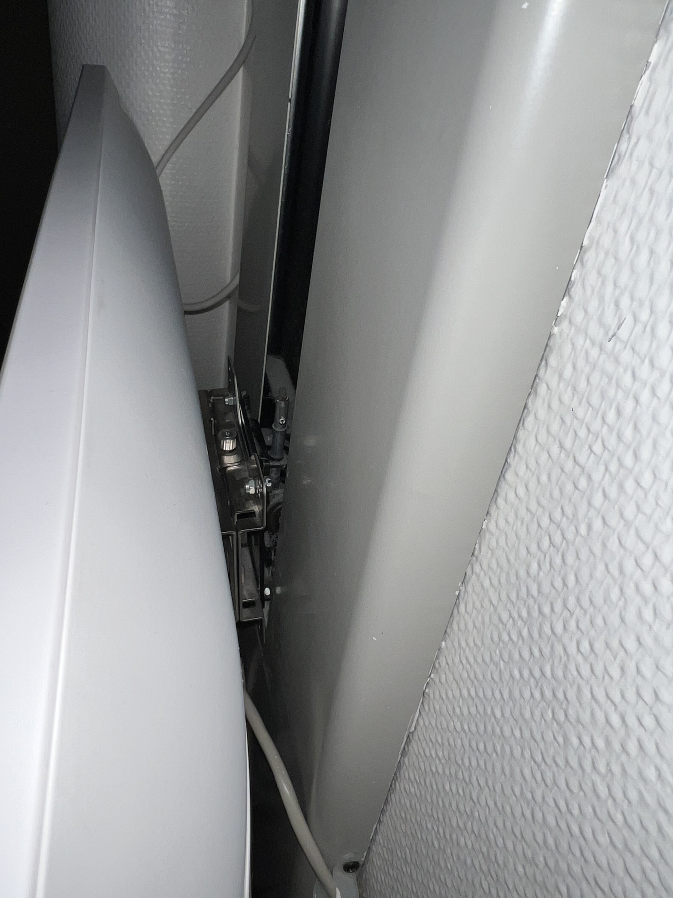
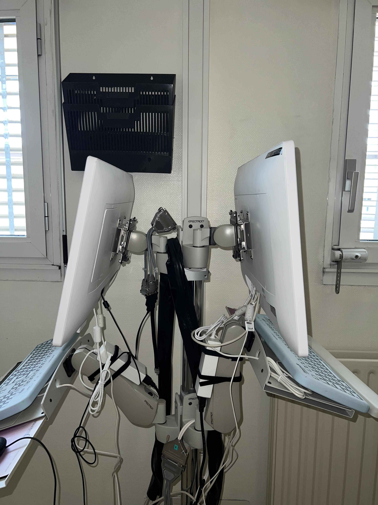

CONFIGURATION ET INSTALLATION DE POSTES
Au cours de cette semaine, j'ai configuré des PC-Tablettes en les ajoutant sur l'AD et en installant les logiciels utilisés par les médecins.
Les PC sont configurés en autologon, ce qui signifie qu'il n'est pas nécessaire de s'identifier pour se connecter.
J'ai configuré et installé au total 18 PC dans les différentes chambres du service USC (Unité de Surveillance Continue).
J'ai également préparé 5 autres PC qui, pour le moment, n'ont pas été installés et qui seront utilisés pour du dépannage si nécessaire.
- - Ces tâches m'ont permis d'approfondir ma connaissance de Windows en réalisant des configurations inédites pour moi.
- - J'ai réussi à installer et configurer les 23 postes sans rencontrer de complications majeures.
- - J'ai également appris à répondre aux exigences liées aux logiciels, garantissant ainsi que les médecins disposent des outils adéquats.
- - Malgré un délai serré, j'ai accompli mes tâches avec succès grâce à une organisation rigoureuse.
- - La configuration en autologon et l'installation dans une unité médicale m'ont fait prendre conscience de l'importance de la sécurité et de la confidentialité. Cela m'a sensibilisé à la responsabilité inhérente à la gestion IT dans des contextes sensibles.
Cette mission m'a donné l'opportunité de collaborer non seulement avec le personnel informatique, mais aussi avec le personnel soignant. Cela m'a aidé à mieux cerner les problèmes rencontrés.